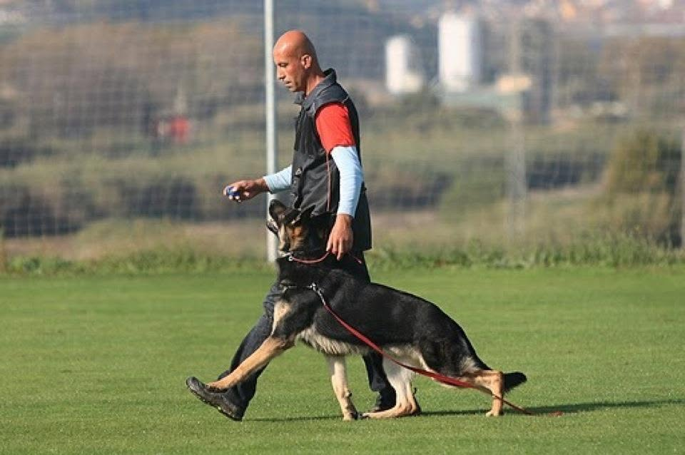
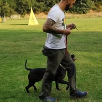
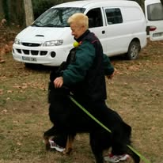
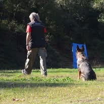
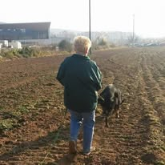
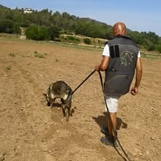

La conducta de tu perro, entendida antes que corregida.
Adiestramiento, modificación de conducta y psicología canina con base científica, en Camí del Flix. Trabajo con perros de cualquier raza y tamaño — casos de ansiedad, reactividad y obediencia, con método, no con suerte.

¿Te suena alguno de estos casos?
Antes de hablar de método, hablemos de lo que os trae hasta aquí.
Tira de la correa sin parar
Paseos que se convierten en un pulso constante, en vez de un momento de disfrute.
Cómo lo trabajamosAnsiedad por separación
Destrozos en casa o llantos cuando te marchas.
Cómo lo trabajamosReactividad con otros perros
Ladridos, tensión y situaciones incómodas durante el paseo.
Cómo lo trabajamosProblemas de obediencia
Llamadas que no funcionan y normas que no se sostienen en casa.
Cómo lo trabajamosUn plan de trabajo para cada perro y cada familia
Nada de recetas genéricas: cada caso se valora de forma individual para entender qué está ocurriendo y definir cómo trabajarlo.
Obediencia y educación
Paseo sin tirones, llamada fiable y calma real — la base sobre la que se apoya cualquier otro trabajo, para cachorros y adultos de cualquier raza o tamaño.
- Paseo sin tirones de correa
- Llamada fiable en cualquier entorno
- Calma real en casa y en la calle
Clases individuales
Sesiones 1:1 para casos concretos: ansiedad, reactividad, tirones o falta de obediencia.
Clases grupales
Socialización y práctica en grupo, con otras familias del club.
Cachorros 0–6 meses
Socialización temprana antes de que el hábito se instale.
Competición
Preparación técnica para exposición y deporte canino.
Rastreo
Ejercicios de olfato y concentración en campo abierto.
¿No ves tu caso?
Cuéntame la situación y vemos juntos el plan más adecuado.

Entender al perro es siempre el punto de partida.
Cada plan nace de pasar tiempo con el perro y con la familia antes de proponer nada, para entender primero qué está pasando realmente.
Pimerkan, activo en Bigues i Riells desde 2020.
Cuatro pasos, un solo criterio: entender antes de intervenir
Un perro que entiende lo que se le pide aprende mejor que uno que solo obedece por presión.
En el terreno, cada semana
No son ejercicios aislados en una sala: así es entrenar en el campo, con distracciones reales y cada perro distinto.




En pleno Camí del Flix
Un entorno natural en Bigues i Riells: espacio real, distracciones controladas y aire libre para trabajar en condiciones reales.
- Camí del Flix, Km 2,5 · 08415 Bigues i Riells, Barcelona
- 675 92 74 09 (Rafa)
- brisaika2@gmail.com
Cuéntame vuestro caso
Explícame brevemente qué está pasando y vemos cuál puede ser la mejor forma de empezar.
Este formulario es todavía una demo: de momento no está conectado a ningún sistema de envío, así que este mensaje no ha llegado a ningún sitio. Para contactar de verdad, usa el WhatsApp de arriba.